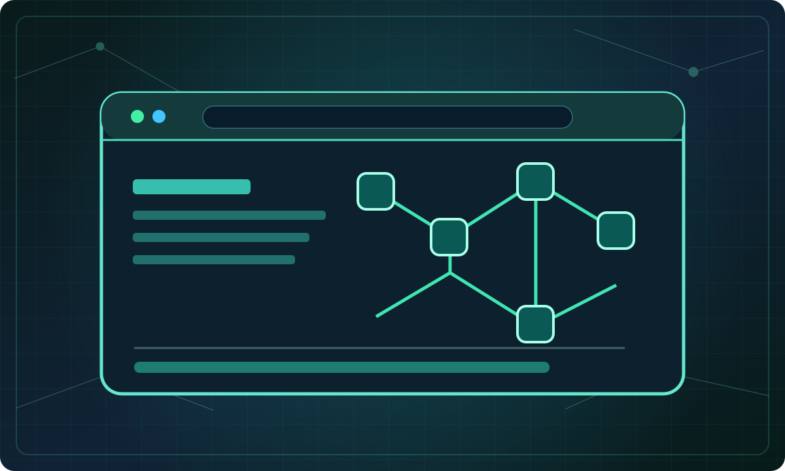
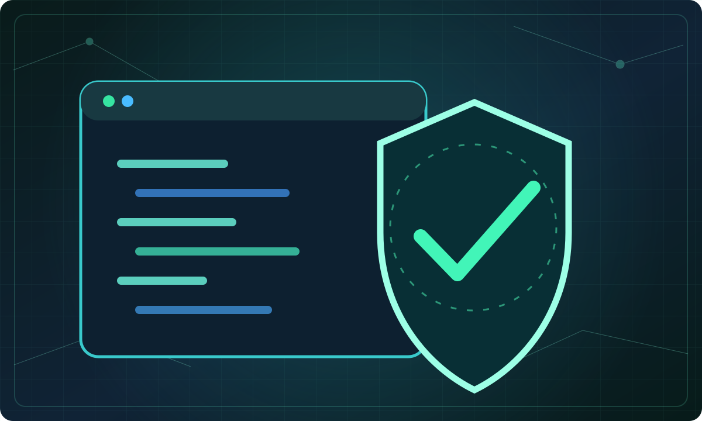
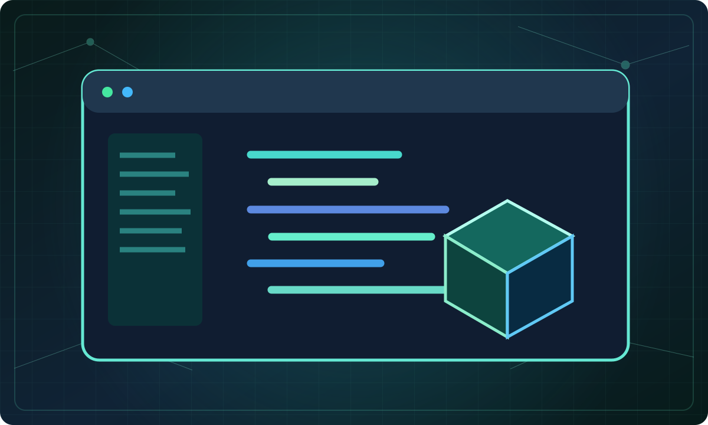
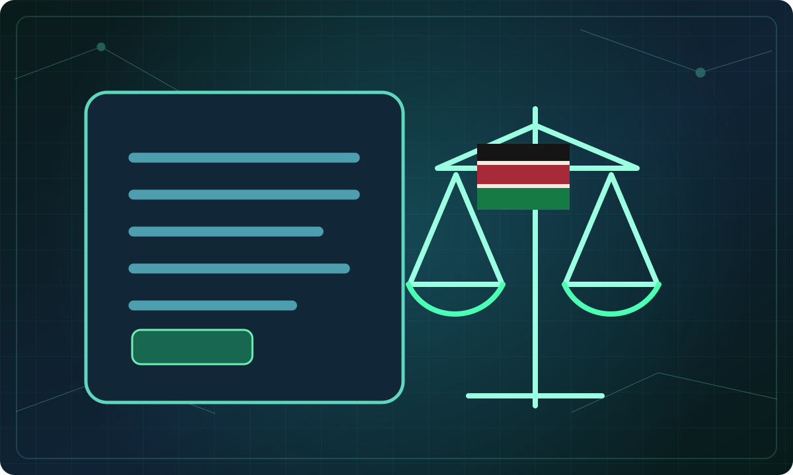
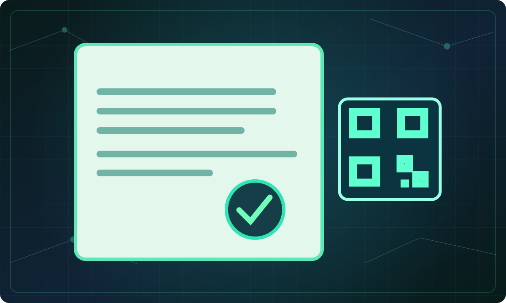
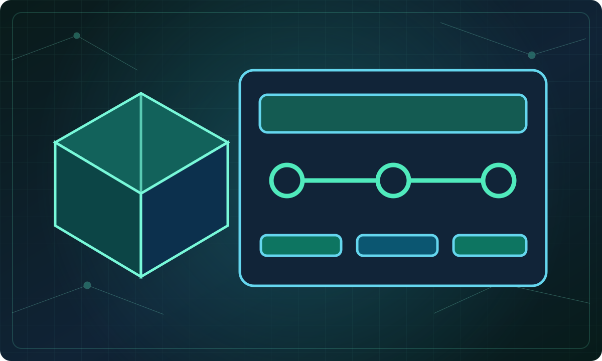
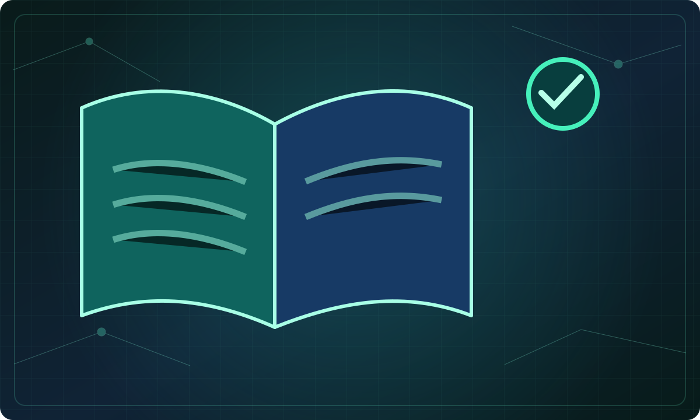
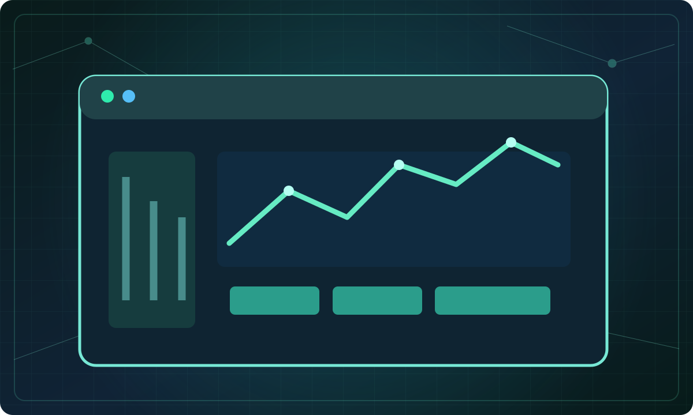

Contract development workflow
- Define rights and ownership
- Build with audited libraries
- Test access control, edge cases and invariants
- Run static analysis and human review
- Deploy to a testnet with explicit authorization
Explore real public-chain information, test smart-contract patterns, understand Kenyan regulatory considerations, create verifiable document fingerprints and plan enterprise blockchain projects.

Inspect addresses, transactions and gas indicators
Inspect a public address, transaction or contract. Direct explorer links work even when browser API requests are blocked or rate-limited.
Provide an address or transaction hash to begin. Your search is public and read-only.
Select Refresh to request gas indicators from the Ethereum Blockscout public API.
Fee estimator excludes application fees, L2 data fees, token value, exchange rates and transaction failure costs. Not a guaranteed quote.
Recognize source-code patterns and review wallet permissions
Review Solidity source for common privileged operations and risky constructs, then use specialist tools for a formal analysis.
Pattern detection only. It cannot establish exploitability, bytecode equivalence, maliciousness, investment suitability or contract safety. Compile, test and commission a real audit.
Inspect token allowances on a dedicated approval dashboard; no seed phrases or private keys should ever be entered here.
We do not claim to inspect active approvals from this page. Disconnecting a wallet does not revoke its on-chain permissions.

Experiment with token standards and developer tools
Design standard tokens and membership passes with OpenZeppelin. Use isolated testing before any mainnet deployment.
The official embedded Wizard provides configurable ERC-20, ERC-721, ERC-1155 and governance templates. External content may be restricted by your browser.
Use verifiable credentials for certificates and access rights. Do not imply an NFT itself proves legal ownership of an off-chain asset.
ERC-721 reference
Review Kenyan business activities against official sources
Identify possible obligations before offering digital-asset services. Results are indicative and must be verified against official documents and legal advice.
Reviewed for this directory on 1 November 2026. Regulations and regulator notices may change—follow the sources directly.
The VASP Act commenced 4 November 2025; the existing-operator transition reference of 4 November 2026 is time-sensitive. The applicable licensing category and current status must be checked with CBK/CMA.

Create and compare document hashes in your browser
Generate or verify a SHA-256 document fingerprint entirely in the browser. Useful for certificates, batch records, assay reports and supply-chain evidence.
A matching hash proves that two inputs have the same digest, subject to hash security—not the author's identity, authenticity of the underlying claim, official land title, ownership, legal compliance or on-chain anchoring. No blockchain transaction is made.

Scope verifiable credentials, traceability and digital services
Create a concrete requirements brief for verifiable credentials, product traceability, digital memberships or tokenization feasibility, then send it to the TeknTandao team.

Work through practical lessons and knowledge checks
Short lessons, interactive knowledge checks and source-linked explanations. Learning progress is stored only in this browser.
Generative AI with citations and evaluation can be added later through a secured retrieval service. Never paste seed phrases or private keys.

Find reputable blockchain, standards and policy information
Explore authoritative resources and current public dashboards. The links lead to external sources; the items below are not automatically updated news headlines.
Open protocol repositories and developer research to evaluate real capabilities and adoption.
Ethereum developer researchLearn about security reports, contract review and known incident patterns.
Slither and security toolingPrimary CBK and CMA source documents for updated obligations and licences.
Official CMA resource centreExplore block counts, addresses, transactions and network activity.
Ethereum Blockscout explorerToken standards, access control, and well-supported design patterns.
OpenZeppelin documentationRequest a feasibility or project design review to translate research into a practical implementation.
Discuss a business project